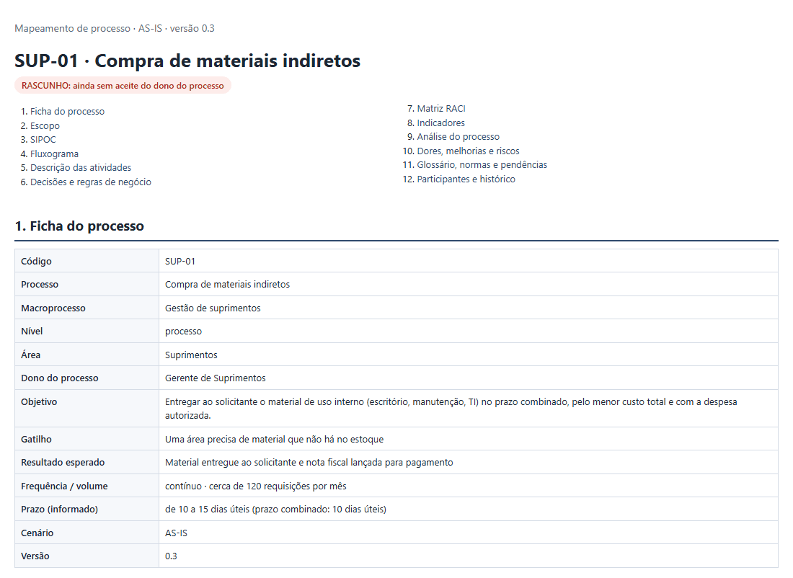
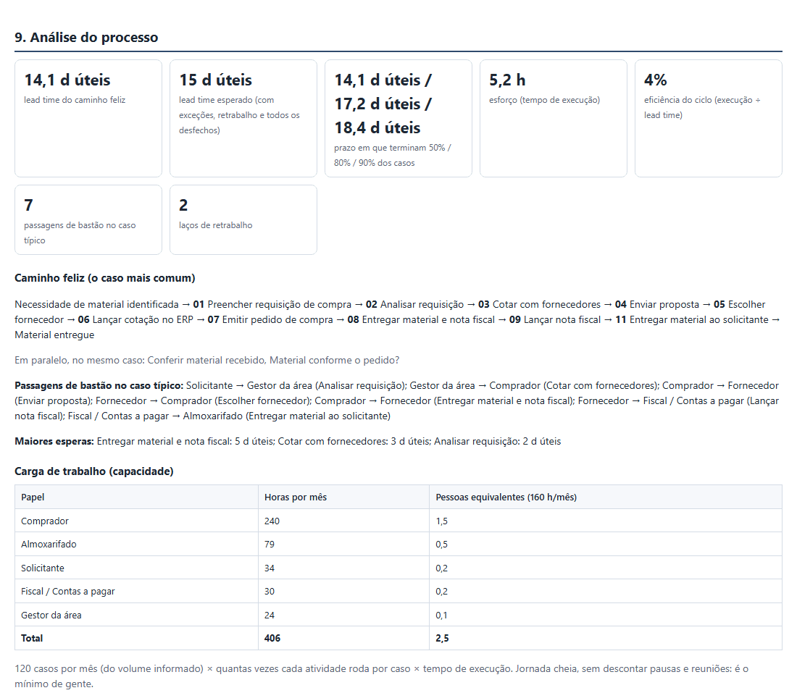
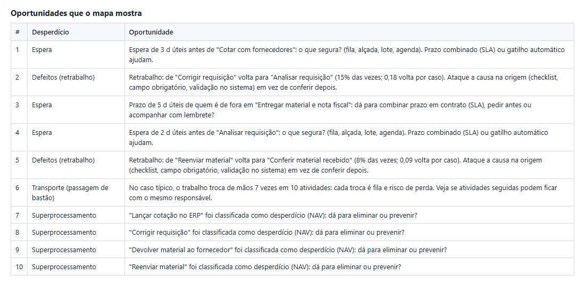
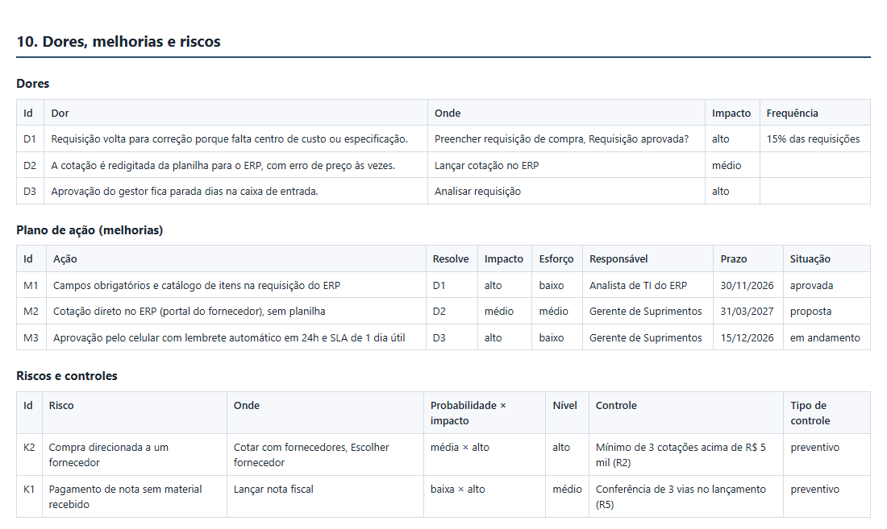

Desenhado no chute.
Alguém desenha o caminho feliz e ninguém pergunta o que acontece no “Não”. A decisão fica sem saída, o retrabalho some do mapa e o paralelo nunca se junta.
Você conta como o trabalho anda, do seu jeito. O Senku conduz a entrevista, pergunta o que falta, prova o fluxo com fichas e 73 verificações, simula 4.000 casos e entrega o fluxograma em raias BPMN 2.0 e o mapeamento completo, prontos para o dono aprovar.
para 80% das compras terminarem. O prazo combinado é 10.
E os dois custam caro: decisão tomada em cima de um desenho que não bate com o trabalho de verdade.
Alguém desenha o caminho feliz e ninguém pergunta o que acontece no “Não”. A decisão fica sem saída, o retrabalho some do mapa e o paralelo nunca se junta.
Sai um documento bonito que ninguém mede nem aprova. Não diz quanto tempo o caso espera, quem responde pelo resultado, nem onde está o desperdício.
Observa, registra, testa e só então afirma. Tudo sai de um arquivo só, a carta do processo. Nada é desenhado à mão.
Sete blocos de perguntas, na ordem em que um bom analista pergunta. Ele não espera o relato perfeito.
Passo, responsável, sistema, regra e tempo vêm de você. O que ninguém respondeu vira lacuna, com prioridade.
Fichas percorrem todos os caminhos e 4.000 casos simulados medem o lead time, a carga e o retrabalho.
Fluxograma e mapeamento completos, com o aceite do dono registrado e um hash por seção.
Quem aprova quando o gerente está de férias?
Quanto tempo o pedido espera antes da cotação?Com as respostas, valida, analisa e mostra o fluxograma e o mapeamento:
Posso registrar o aceite do Gerente de Suprimentos?
a espera de 3 dias antes da cotação é o maior desperdício; quer redesenhar o TO-BE a partir daqui?
Nada de “acho que o gerente aprova depois”. Se não veio de você, entra como pergunta, não como passo.
É assim que o BPMN define a execução: uma ficha entra no início e anda pelas setas. Na decisão, segue um caminho; no paralelo, se divide; na junção, espera as outras. Se alguma fica presa, o mapa está errado, e o Senku avisa antes de você mostrar ao dono.
Com os tempos e percentuais da entrevista, o Senku simula caso a caso, com retrabalho e paralelo, e mostra o que a média esconde.
Exemplo SUP-01 · 4.000 casos simulados · dias úteis
Cada barra: quantos casos terminaram naquele dia útil. Embaixo, até quando 50%, 80% e 90% dos casos terminam.
Saída do python senku.py analisar
Os tempos são estimativas da entrevista, não medição. O próprio Senku avisa: confirme antes de usar em decisão.
Tudo abaixo saiu de python senku.py documentar exemplos/compras/carta.json, com o processo fictício e completo de compras: 6 áreas, 14 atividades, 2 decisões, retrabalho, fornecedor externo e trabalho em paralelo.
.svg .png.bpmn.drawio.mmd.html.docx.md.csvaceite
Ficha do processo e as 12 seções
Análise: tempos, simulação e carga
Oportunidades Lean priorizadas
Dores, plano de ação e riscosAbra o exemplo inteiro: Markdown · Word · BPMN · planilha · a carta que gerou tudo
Você não precisa decorar nada: o Claude roda os comandos por você. Perdeu o fio? situacao diz em que etapa a carta está e qual é o próximo passo.
Como o cartão de memória de um videogame: depois do aceite, cada processo vira um save num repositório seu no GitHub, privado por padrão, com o fluxograma, o mapeamento, a carta, a versão e o motivo de cada mudança. Antes de mapear um processo novo, ele procura no cartão se alguém já mapeou. Só envia com o seu “sim”.
| O quê | Resultado |
|---|---|
| Testes automatizados | 214 passando |
| Verificações de boa modelagem (7PMG, BPMN Method and Style, tempos, RACI, prazos) | 73 |
| Casos simulados a cada análise | 4.000 |
| Formatos de saída (SVG, PNG, BPMN 2.0, draw.io, Mermaid, HTML, Word, Markdown, CSV) | 9 |
| Modeladores de onde o .bpmn pode vir (Bizagi, bpmn.io, Camunda 7 e 8, ARIS, Signavio) | 5 |
| Ida e volta BPMN (exportar, abrir, importar) sem mudar o fluxo | sim, nos testes |
| Dependências para instalar | 0 |
Medido na versão 1.14.0, com os exemplos do repositório (um processo de compras e um de crédito, fictícios).
Você precisa de Python 3.8 ou mais novo e do Claude Code. Só a biblioteca padrão do Python: nada para instalar além da própria skill.
quero mapear o processo de reembolso de despesas
Só para o projeto atual, troque o destino por .claude/skills/senku. Guia completo em COMO-INSTALAR.md.
Instale, conte o processo do seu jeito e receba o mapa provado, pronto para o dono aprovar.
senku · não desenha no chute. prova.